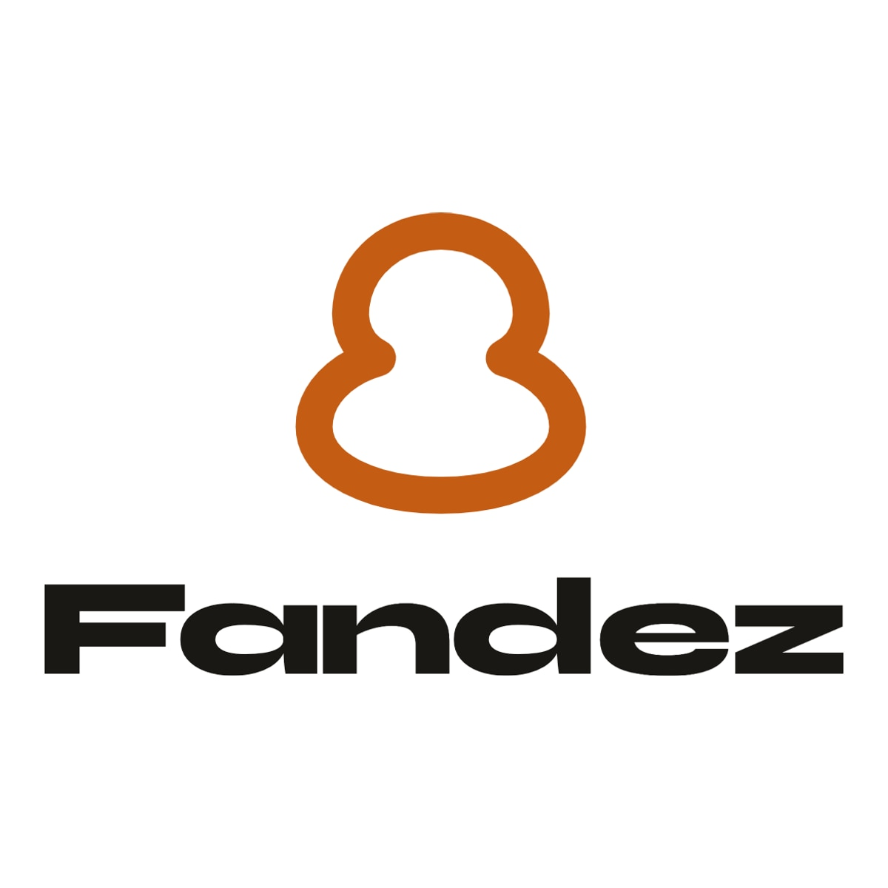
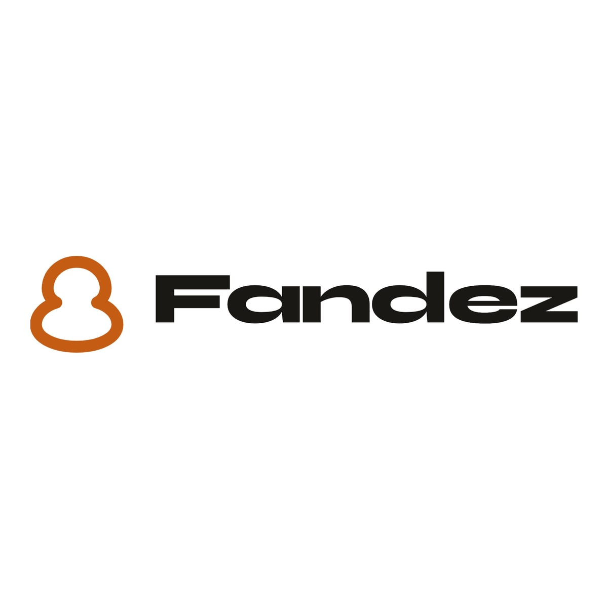
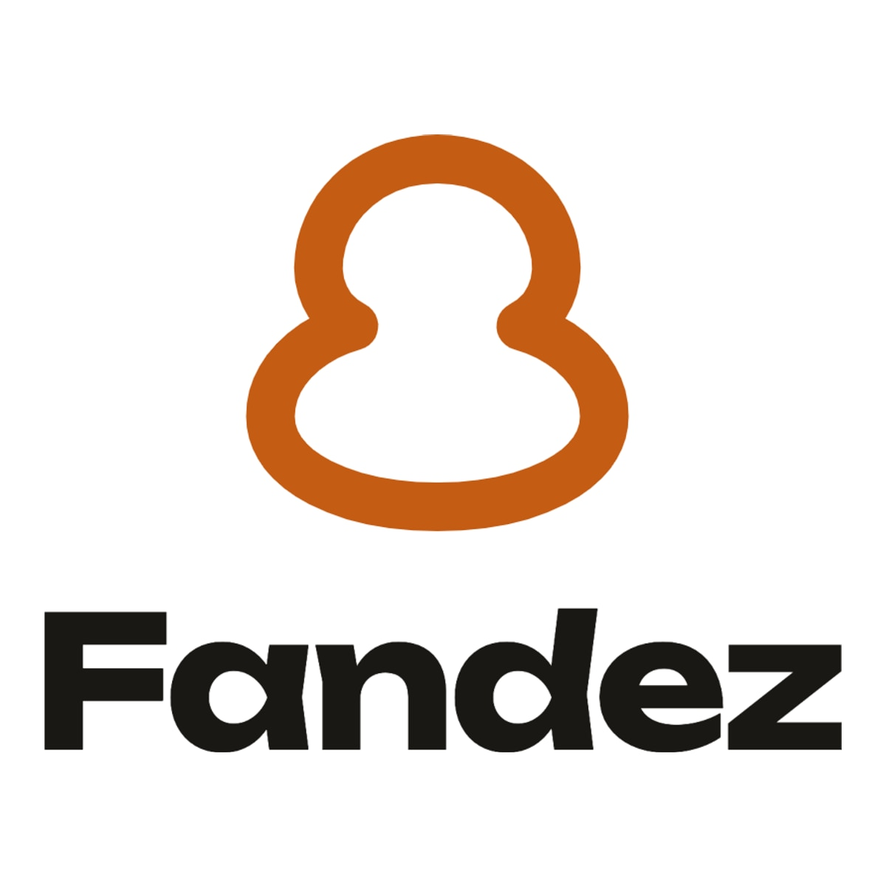
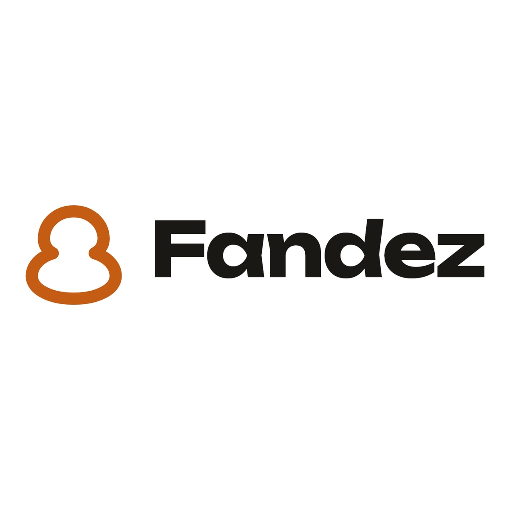
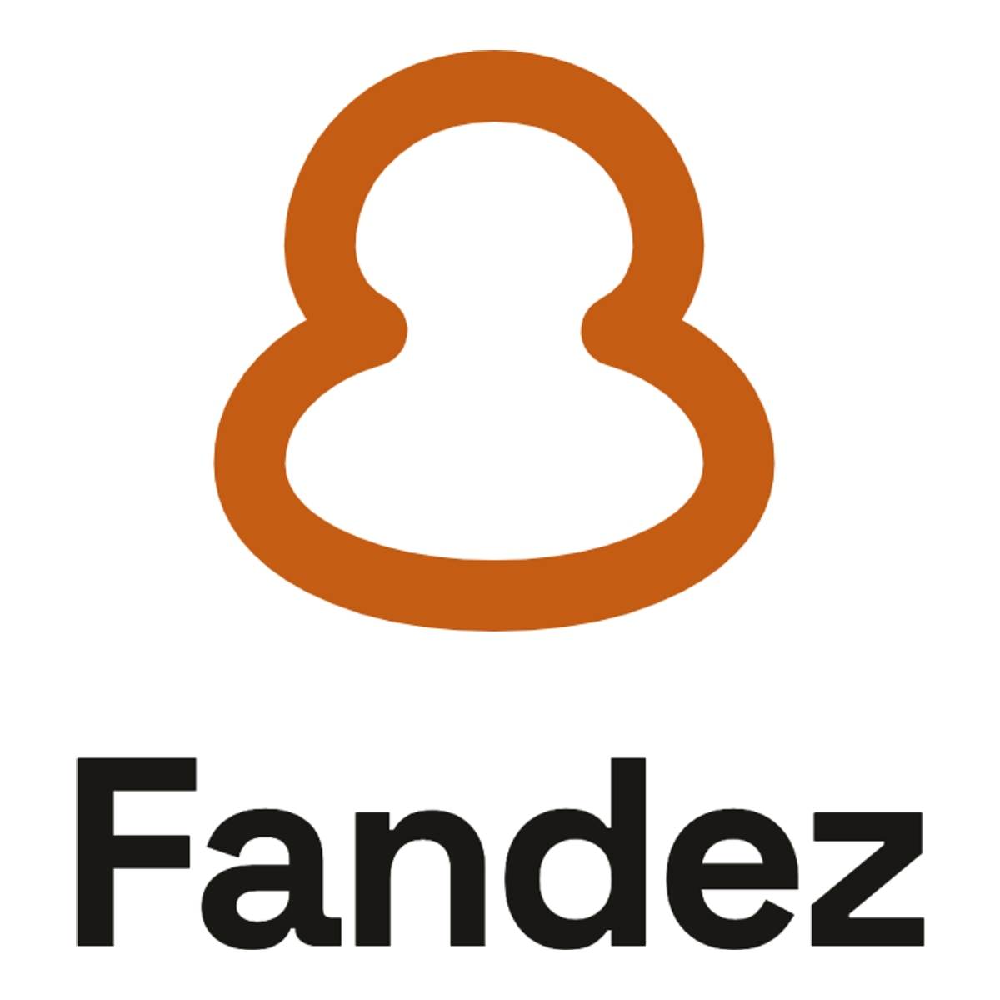
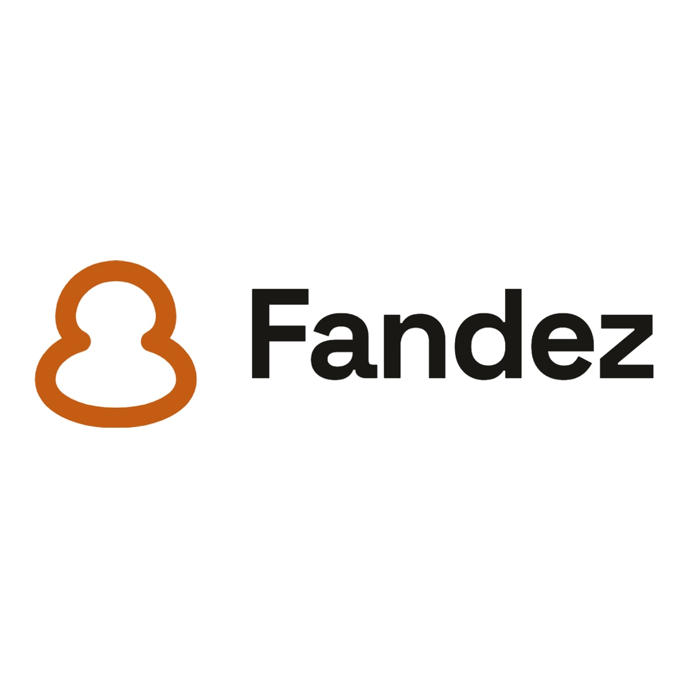

Syne ExtraBold
Oficio + plataforma
Lockup

Sobre ámbar

Identidad de marca. Geometría con carácter; se aleja de Inter/Arial. Buena para registrar y diferenciarse.
fandez-opcion-A-syne.jpg
Elegida: opción B — Unbounded Bold. Las otras quedan como referencia.
Cómo mirarlas: la de arriba es el lockup apilado (INAPI). La de abajo simula el logo en botón ámbar.
Oficio + plataforma
Lockup

Sobre ámbar

Identidad de marca. Geometría con carácter; se aleja de Inter/Arial. Buena para registrar y diferenciarse.
fandez-opcion-A-syne.jpg
Futuro / app nativa
Lockup

Sobre ámbar

Display tech actual. Terminales más cuadrados; se lee “producto digital / fintech-home”. Más llamativa.
fandez-opcion-B-unbounded.jpg
Startup / SaaS
Lockup

Sobre ámbar

Clásico de startups tech. Limpia y confiable; muy usada en SaaS (más “parecida a otras apps”).
fandez-opcion-C-space-grotesk.jpg